Zelený ještěr ( Green lizard )
Zelený ještěr je jeden z nejzákladnějších ještěrů, nachází se hned v Přeměstí a mnoha dalších regionech poblíž začátku.
Jejich primární barva (barva halvy, a končetin) je zelená a různé její odstíny od limetkové po mátově zelenou a sekundární (barva těla) je černá s lehkým odstínem zelené.
Vzheldově mají unikátně obdelníkovou hlavu s malými rohy zaoblenými dolů.
Tělo mají čisté, nebo s malými špičkami.
Jejich chůze je spíše podivná, kde namísto chození se spíše táhnou po zemi.
Bojovat s zelenými ještěry je spíše jednoduší než s ostatnímy kvůli tomu že se drží na zemi.
Je potřeba 5 - 10 Oštěpů na zabití zeleného ještěra.
Pokud stojíte na zemi poslouchejte pro sičení a lehké couvnutí, protože to znamená že ještěr použije svůj vrhací útok, neboli se vrhne s věcí ryhclostí po jeho kořisti.
Jejich kousnutí je z 50% smrtelné.
Nachází se převážně v: Přeměstí, Průmyslovém Komplexu, Smetišti a Zemědělských Polých.
Jejich primární barva (barva halvy, a končetin) je zelená a různé její odstíny od limetkové po mátově zelenou a sekundární (barva těla) je černá s lehkým odstínem zelené.
Vzheldově mají unikátně obdelníkovou hlavu s malými rohy zaoblenými dolů.
Tělo mají čisté, nebo s malými špičkami.
Jejich chůze je spíše podivná, kde namísto chození se spíše táhnou po zemi.
Bojovat s zelenými ještěry je spíše jednoduší než s ostatnímy kvůli tomu že se drží na zemi.
Je potřeba 5 - 10 Oštěpů na zabití zeleného ještěra.
Pokud stojíte na zemi poslouchejte pro sičení a lehké couvnutí, protože to znamená že ještěr použije svůj vrhací útok, neboli se vrhne s věcí ryhclostí po jeho kořisti.
Jejich kousnutí je z 50% smrtelné.
Nachází se převážně v: Přeměstí, Průmyslovém Komplexu, Smetišti a Zemědělských Polých.
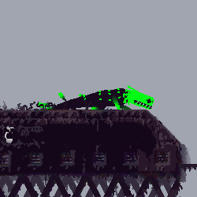
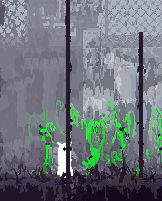
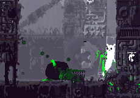
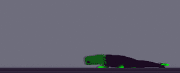
Růžový ještěr ( Pink lizard )
Růžový ještěr je podobně jako Zelený ještěr jeden z nejzákladnějších ještěrů, nachází se hned v Přeměstí a mnoha dalších regionech poblíž začátku.
Jejich primární barva je růžová a různé její odstíny od foalové po magentu a sekundární je černá s lehkým odstínem fialové.
Tělo mají čisté, nebo s kudrlynkami.
Velikostně jsou to spíše menší ještěři a kvůli tomu také ryhclejší a zranitelnější a dokážou líst na tyče, takže u tohoto ještěra vás vyší bod nezachrání.
Je potřeba 2 - 4 Oštěpy na zabití, ale není doporučeno se přibližovat kvůli jejich rychlosti a navíjícímu útoku, který je rychlejší a delší než vrhací útok Zeleného ještěra.
Jejich kousnutí je z 33% smrtelné.
Nachází se převážně v: Přeměstí, Průmyslovém Komplexu, Smetišti, Zemědělských Polých, Komínovych Klenbách a Létajících Ostrovech.
Jejich primární barva je růžová a různé její odstíny od foalové po magentu a sekundární je černá s lehkým odstínem fialové.
Tělo mají čisté, nebo s kudrlynkami.
Velikostně jsou to spíše menší ještěři a kvůli tomu také ryhclejší a zranitelnější a dokážou líst na tyče, takže u tohoto ještěra vás vyší bod nezachrání.
Je potřeba 2 - 4 Oštěpy na zabití, ale není doporučeno se přibližovat kvůli jejich rychlosti a navíjícímu útoku, který je rychlejší a delší než vrhací útok Zeleného ještěra.
Jejich kousnutí je z 33% smrtelné.
Nachází se převážně v: Přeměstí, Průmyslovém Komplexu, Smetišti, Zemědělských Polých, Komínovych Klenbách a Létajících Ostrovech.
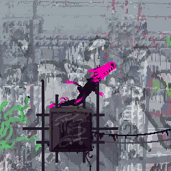
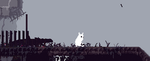
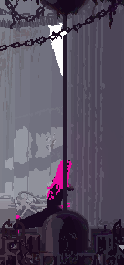
Modrý ještěr ( Blue lizard )
Modří ještěři jsou jedeni z nejmenších ještěrů je ještě menší než Růžový ještěr.
Jejich primární barva je modrá a různé odstíny od tyrkysové až po tmavě modrou a sekundární je černá s lehkým odstínem fialové.
Ocas je kratší a často pokryt s páramy brk či šupin.
Kvůli malé velikosti jsou schopni lést po zadních stěnách a trubkách, kvůli tomuto můžou být težší trefit, ale zato je potřeba pouze 1 - 2 Oštěpy na zabití Je to také prní ještěr kterého potkáte s dlohým jazykem, který může vystřelit po své kořisti a přitáhnout ji.
Pokud má jazyk veňku, tak se nemůže hýbat dokud není omráčen nebo nepřitáhne svoji kořist.
Jejich kousnutí je z 25% smrtelné.
Nachází se převážně v: Průmyslovém Komplexu, Exteriéru, Komínových Klenbách, Zemědělských Polých a Podzemí.
Jejich primární barva je modrá a různé odstíny od tyrkysové až po tmavě modrou a sekundární je černá s lehkým odstínem fialové.
Ocas je kratší a často pokryt s páramy brk či šupin.
Kvůli malé velikosti jsou schopni lést po zadních stěnách a trubkách, kvůli tomuto můžou být težší trefit, ale zato je potřeba pouze 1 - 2 Oštěpy na zabití Je to také prní ještěr kterého potkáte s dlohým jazykem, který může vystřelit po své kořisti a přitáhnout ji.
Pokud má jazyk veňku, tak se nemůže hýbat dokud není omráčen nebo nepřitáhne svoji kořist.
Jejich kousnutí je z 25% smrtelné.
Nachází se převážně v: Průmyslovém Komplexu, Exteriéru, Komínových Klenbách, Zemědělských Polých a Podzemí.
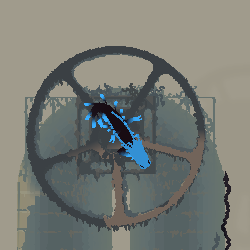
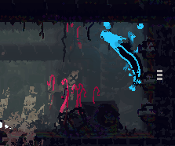
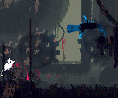
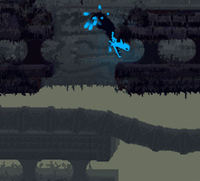
Bílý ještěr ( White lizard )
Bílí ještěři bývají často smrtelní pokuď nejste všímavý.
Jejich primární i sekundární barva je bílá bez různých odstínů, ale jejich primární barva spíše problikává mezi bílou a černou.
Tělo mívají čisté, ale občasných pár šupinek či chloupků na ocasu je také možné aby měli.
Bílí ještěŕi jsou často také nazýváni jako kamuflážní ještěri či chameleoni, jejich specialita je že dokážou měnit barvu a zamaskovat se s okolím.
Podobně jako Modrý ještěr může lést po zdech, i přest jeho velikost.
Také má schopnost vystřelení jazyku, ale mnohem delší.
Je potřeba 2 - 4 Oštěpy pro zabytí, ale když vás přitahuje jazykem, můžete zaútočit Oštěpm do jeho tlamy pro větší poškození.
Jejich kousnutí je z 28.6% smrtelné.
Nachází se převážně v: Průmyslovém Komplexu, Exteriéru, Komínových Klenbách a Létajících Ostrovech.
Jejich primární i sekundární barva je bílá bez různých odstínů, ale jejich primární barva spíše problikává mezi bílou a černou.
Tělo mívají čisté, ale občasných pár šupinek či chloupků na ocasu je také možné aby měli.
Bílí ještěŕi jsou často také nazýváni jako kamuflážní ještěri či chameleoni, jejich specialita je že dokážou měnit barvu a zamaskovat se s okolím.
Podobně jako Modrý ještěr může lést po zdech, i přest jeho velikost.
Také má schopnost vystřelení jazyku, ale mnohem delší.
Je potřeba 2 - 4 Oštěpy pro zabytí, ale když vás přitahuje jazykem, můžete zaútočit Oštěpm do jeho tlamy pro větší poškození.
Jejich kousnutí je z 28.6% smrtelné.
Nachází se převážně v: Průmyslovém Komplexu, Exteriéru, Komínových Klenbách a Létajících Ostrovech.
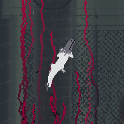
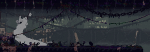
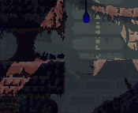
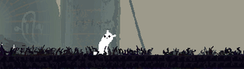
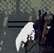
Žlutý ještěr ( Yellow lizard )
Žlutí ještěři mají svoje dlouhé charakteristické antény, které využívají na komunikaci a loví po skupinách 2 až 5.
Jejich primární barva je žlutá s odstíny oranžové až skoro červené s černou sekundarní barvou.
Podobně jako ostatní ještěři můžou mít různé šupiny, špičky a brka, ale u těchto jsou hlavní jejich pruhované antény.
Nejsou moc silní o samoťe, je možné je zabít 2 - 4 Oštěpama, jsou nemotorní (proto často padají do hlubin) a mají pomalé reflexy.
často se nachází v místech s velkým počtem tunelů a jiných stesek, kudy můžete utéct, ale často i to není možné, protože pokud si vás všimne využije svoje antény na přivolání své tlupy, která vás obklíčí a poté je velice těžké utéct.
Jejich kousnutí je z 25% smrtelné.
Nacházejí se převážně v: Exteriéru a Létajících Ostrovech.
Jejich primární barva je žlutá s odstíny oranžové až skoro červené s černou sekundarní barvou.
Podobně jako ostatní ještěři můžou mít různé šupiny, špičky a brka, ale u těchto jsou hlavní jejich pruhované antény.
Nejsou moc silní o samoťe, je možné je zabít 2 - 4 Oštěpama, jsou nemotorní (proto často padají do hlubin) a mají pomalé reflexy.
často se nachází v místech s velkým počtem tunelů a jiných stesek, kudy můžete utéct, ale často i to není možné, protože pokud si vás všimne využije svoje antény na přivolání své tlupy, která vás obklíčí a poté je velice těžké utéct.
Jejich kousnutí je z 25% smrtelné.
Nacházejí se převážně v: Exteriéru a Létajících Ostrovech.
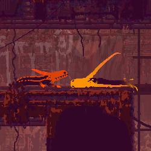
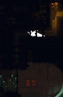
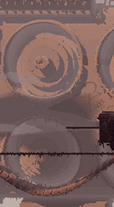
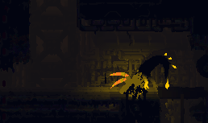
Karamelový ještěr ( Caramel lizard )
Karamelový ještěr je jeden z největších ještěrů.
Jeho primární barva je světle hnědá připomínající karamel a různé odstíny světlejší a tmavší hnědé.
Tělo často mývají na vrchu pokryté řadou hrotů a také můžou mít jiné brka a šupiny jako ostatní ještěři
Jejich hlavní detail je že mají 3 páry nohou, kde jejich prostřední pár je kratší než ostatní.
Také podobně jako Zelený ještěr mají obdelníkovou hlavu.
Je velice hbytý a na zabití tohoto ještěra je potřeba 5 - 6 Oštěpů.
I přes to že nejsou schopní lést na tyče, tak i ty vás nezachrání, protože podobně jako Zelený ještěr může udělat vrhací útok, ale tentokrát je delší a dokáže skočit i vysoce do vzduchu.
A pokud i tak na vás nedošáhne tak začne flusat projektily, tyto projektily sice nepoškozují, ale přidávájí obrovskou váhu, která vás schodí z tyčí.
Jejich kousnutí je z 50% smrtelné.
Nevyskytuje se často, spíše 1 - 2 v celém regionu, ale objevují se hlavně v: Průmyslovém Komplexu, Smetišti, Komínových Klenbách, Zemědělských Polých a v Podzemí.
Jeho primární barva je světle hnědá připomínající karamel a různé odstíny světlejší a tmavší hnědé.
Tělo často mývají na vrchu pokryté řadou hrotů a také můžou mít jiné brka a šupiny jako ostatní ještěři
Jejich hlavní detail je že mají 3 páry nohou, kde jejich prostřední pár je kratší než ostatní.
Také podobně jako Zelený ještěr mají obdelníkovou hlavu.
Je velice hbytý a na zabití tohoto ještěra je potřeba 5 - 6 Oštěpů.
I přes to že nejsou schopní lést na tyče, tak i ty vás nezachrání, protože podobně jako Zelený ještěr může udělat vrhací útok, ale tentokrát je delší a dokáže skočit i vysoce do vzduchu.
A pokud i tak na vás nedošáhne tak začne flusat projektily, tyto projektily sice nepoškozují, ale přidávájí obrovskou váhu, která vás schodí z tyčí.
Jejich kousnutí je z 50% smrtelné.
Nevyskytuje se často, spíše 1 - 2 v celém regionu, ale objevují se hlavně v: Průmyslovém Komplexu, Smetišti, Komínových Klenbách, Zemědělských Polých a v Podzemí.
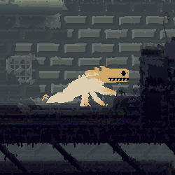
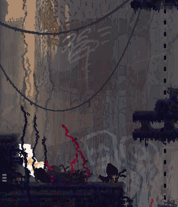
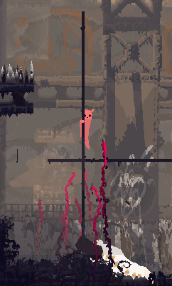
Černý ještěr ( Black lizard )
Černý ještěr je slepý, protože žije v tmavých a neosvětlených částech a regionech, proto se jim také říká krtci nebo krtčí ještěři.
Jejich primární i sekundární barva je černá, ale jejich primární pulzuje s bílou barvou.
Toto pulzování se nejvíce projevuje na jehjich vouskách podobné kočicím voskům.
Podobně jako ostatní ještěři je potřeba 2 - 4 Oštěpy na zabití.
I přes to že nevidí není doporučeno na ně útočit, protože se jich v objevuje několik v stejném okolí, takže útok na jednoho může přivolat další.
Je možné je pomalu obeběhnout bež toho aby si vás všimnuly a při kousnutí se můžou často netrefit, kvůli tomu že špatně časují své útoky.
Jejich kousnutí je z 35.4% smrtelné.
Vyskytují se převážně v Zastíněné Citaděle, Potrubním Dvůře a Podzemí.
Jejich primární i sekundární barva je černá, ale jejich primární pulzuje s bílou barvou.
Toto pulzování se nejvíce projevuje na jehjich vouskách podobné kočicím voskům.
Podobně jako ostatní ještěři je potřeba 2 - 4 Oštěpy na zabití.
I přes to že nevidí není doporučeno na ně útočit, protože se jich v objevuje několik v stejném okolí, takže útok na jednoho může přivolat další.
Je možné je pomalu obeběhnout bež toho aby si vás všimnuly a při kousnutí se můžou často netrefit, kvůli tomu že špatně časují své útoky.
Jejich kousnutí je z 35.4% smrtelné.
Vyskytují se převážně v Zastíněné Citaděle, Potrubním Dvůře a Podzemí.
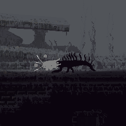
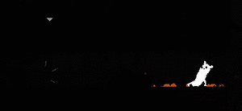
Červený ještěr ( Red lizard )
Červený ještěr je největší, nejdelší, nejagresivnější a nejnebezpečnější ještěr.
Jejich primární barva je červená a sekundární je černá.
Je to nejzdobenější ještěr, je celý pokrty různými šupinami, hortami a háčkami až na konec jeho dlouhého ocasu.
Není vůbec doporučeno s nimy útočit, je potřeba 6 - 12 Oštěpů, jsou imuní proti explozím a kameny je nepřevrhnout.
Podobně jako Karamelový ještěr může flusat projektily, které zatíží jeho kořist aby spadla z tyčí.
Nadále má i velice dlouhý jazyk jako Bílý ještěr.
Není lehké jim utéct kvůli jejich rychlosti, agresivitě a velice dobrému zraku a sluchu a je velice doporučeno používat vyspělejší pohyb.
Kousnui tímto ještěrem je smrtelné ze 100%.
Nevyskytují se skoro vůbec, ale můžete je najít v: Přeměstí a Průmyslovém Komplexu.
Jejich primární barva je červená a sekundární je černá.
Je to nejzdobenější ještěr, je celý pokrty různými šupinami, hortami a háčkami až na konec jeho dlouhého ocasu.
Není vůbec doporučeno s nimy útočit, je potřeba 6 - 12 Oštěpů, jsou imuní proti explozím a kameny je nepřevrhnout.
Podobně jako Karamelový ještěr může flusat projektily, které zatíží jeho kořist aby spadla z tyčí.
Nadále má i velice dlouhý jazyk jako Bílý ještěr.
Není lehké jim utéct kvůli jejich rychlosti, agresivitě a velice dobrému zraku a sluchu a je velice doporučeno používat vyspělejší pohyb.
Kousnui tímto ještěrem je smrtelné ze 100%.
Nevyskytují se skoro vůbec, ale můžete je najít v: Přeměstí a Průmyslovém Komplexu.
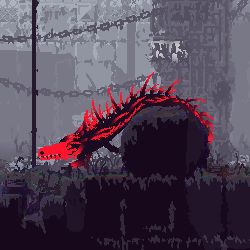
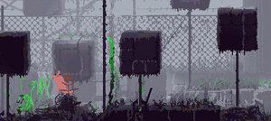
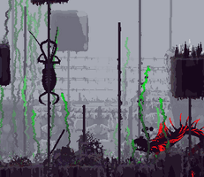
Netopýrek ( Batfly )
Netopýrci jsou malé stvoření připomínající kombinaci mouchy a netopýra a vyskytují se v každém regionu.
Mají malé černé oválovité telíčko s dvěmi křídly a malými bílými oky a miniaturnímy anténky.
Slouží jako jedno z hlavních jídel pro scugy, po snězení doplňují 1 pip jídla, ale Hunterovi a Artificererovi pouze čtvrtinu.
Netopýrci se při přítomnosti scugů nebo jiných stvoření schovávají, proto je občas otravné je chytat.
Chytání je možné zjednodušit že po nich skočíte spíše z výšky či z dálky, poté nemají čas uhnout.
Také je možné je udeřit Oštěpem nebo Kamenem což je okamžitě usmrtí.
A je to ještě další možnost a to je Netopýří tráva, ke které jsou netopýrci lákáni.
Netopýrci se objevují hlavně u jejich úlu, do které he se schovávají když se cítí ohroženi.
Tento úl je možné vydět i na mapě pomocí modrého koužku, který znázorňuje aktivitu tohoto úlu.
Mají malé černé oválovité telíčko s dvěmi křídly a malými bílými oky a miniaturnímy anténky.
Slouží jako jedno z hlavních jídel pro scugy, po snězení doplňují 1 pip jídla, ale Hunterovi a Artificererovi pouze čtvrtinu.
Netopýrci se při přítomnosti scugů nebo jiných stvoření schovávají, proto je občas otravné je chytat.
Chytání je možné zjednodušit že po nich skočíte spíše z výšky či z dálky, poté nemají čas uhnout.
Také je možné je udeřit Oštěpem nebo Kamenem což je okamžitě usmrtí.
A je to ještě další možnost a to je Netopýří tráva, ke které jsou netopýrci lákáni.
Netopýrci se objevují hlavně u jejich úlu, do které he se schovávají když se cítí ohroženi.
Tento úl je možné vydět i na mapě pomocí modrého koužku, který znázorňuje aktivitu tohoto úlu.
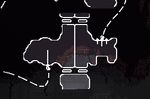

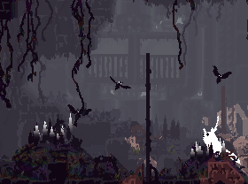
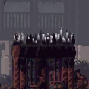
Vaječník ( Eggbug )
Vaječníkové jsou velic plaché stvoření, které na svých zádech nesou svoje vajíćka.
Jsou o velikosti půl scuga, jejich vzhled je charakteristický pomocí vajíček a velice dlouhých tykadel.
Vajíčka a oči jsou zabarvená stejnou barvou odstínů od modré, tyrkysové až zelené a jejich různých odstínů.
Vaječníci jsou velice mrštné potvory a dokážou se vyhnout i rychle letícímu Oštěpu, proto na ně musíte útočit ze zádu nebo když zrovna nemají jak uhnout.
Po zabití z nich vypadnou všechny jejich vajíčka (6), které každé dává 1 pip jídla.
Jsou o velikosti půl scuga, jejich vzhled je charakteristický pomocí vajíček a velice dlouhých tykadel.
Vajíčka a oči jsou zabarvená stejnou barvou odstínů od modré, tyrkysové až zelené a jejich různých odstínů.
Vaječníci jsou velice mrštné potvory a dokážou se vyhnout i rychle letícímu Oštěpu, proto na ně musíte útočit ze zádu nebo když zrovna nemají jak uhnout.
Po zabití z nich vypadnou všechny jejich vajíčka (6), které každé dává 1 pip jídla.
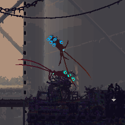
Medůza ( Jellyfish )
Medůzy se vyskytují pouze ve vodě, často na otevřených sekcích a vždy plovou na povruchu.
Medůzy vapadají jako malý růžovo průhledný padáček s 4 až 7 úponky ve vodě.
Medůzy jsou speciální v tom že svýmy úponky se můžou uchytit na jiné stvoření a vytvořit elketrycký výboj, který může omráčit na dobu až 1 sekundy.
Tato funkce je často nepříjemná, když zdrháte před nebezpečím, ale mají další nebezpečnou funkci, kterou můžete využít.
Když medůzu vezmete do ruky a hodíte ji, tak bude vydávat elektrický šok cca 3 sekundy dlouhý který je více nebezpečný než z úchytu.
Pokud se při tomto silnějším šoku dotkne jakékoliv jiné stvoření, tak úplně skolabuje, ztratí veškerou funkci a začne se klepat, ale po pár sekundách se jim znovu navrátí vědomý fungují úplně normálně.
Tato chvíle vám dává pár sekund utéct nebezpečí, nebo na další útok medůzou.
Od ostatních jedlích věcí jsou jezeny rychleji a doplňují 1 pip jídla pro všechny scugy a půl pipu po propíchnutí Spearmasterovou jehlou.
Medůzy vapadají jako malý růžovo průhledný padáček s 4 až 7 úponky ve vodě.
Medůzy jsou speciální v tom že svýmy úponky se můžou uchytit na jiné stvoření a vytvořit elketrycký výboj, který může omráčit na dobu až 1 sekundy.
Tato funkce je často nepříjemná, když zdrháte před nebezpečím, ale mají další nebezpečnou funkci, kterou můžete využít.
Když medůzu vezmete do ruky a hodíte ji, tak bude vydávat elektrický šok cca 3 sekundy dlouhý který je více nebezpečný než z úchytu.
Pokud se při tomto silnějším šoku dotkne jakékoliv jiné stvoření, tak úplně skolabuje, ztratí veškerou funkci a začne se klepat, ale po pár sekundách se jim znovu navrátí vědomý fungují úplně normálně.
Tato chvíle vám dává pár sekund utéct nebezpečí, nebo na další útok medůzou.
Od ostatních jedlích věcí jsou jezeny rychleji a doplňují 1 pip jídla pro všechny scugy a půl pipu po propíchnutí Spearmasterovou jehlou.
Tulák ( Scavenger )
Tuláci jsou unikátní stvoření, jsou inteligentnější než ostatní a mají podobný pohyb jako scugové a často chodí v tlupách.
Jsou čtyřnohý s prodlouhým přeloktím a krátkými nohy. Mají expresivní obličej a můžou mít různé rysy obličeje jako rohy a kusadla.
Tuláci nejsou okamžitě agresivní, jsou spíše neutrální a je lepší je držet na své straně, protože útočí pouze pokuď jsou provokování.
Jsou speciální v tom že mají vztah k scugům, pokud jsou provokováni tak se vztah celkově zhrošuje, budou agresivní hned poté co vás uvidí.
Pokud budete obchodovat, dávat jim věci, hlvně perly, tak se vztah bude zlepšovat a je možné aby vás i tlupa pronásledovala chránila vás a útočila s vámi.
Vyskytují se skoro v každém regionu: Přeměstí, Průmyslovém Komplexu, Smetišti, Odvodňovacím Systému, Zastíněné Citaděle, Komínových Klenbách, Létajících Ostrovů, Potrubním Dvůře, Zemědělských Polých, Ponořené Super‑Konstrukci, Podzemí a hlavně v Metropoli.
Jsou čtyřnohý s prodlouhým přeloktím a krátkými nohy. Mají expresivní obličej a můžou mít různé rysy obličeje jako rohy a kusadla.
Tuláci nejsou okamžitě agresivní, jsou spíše neutrální a je lepší je držet na své straně, protože útočí pouze pokuď jsou provokování.
Jsou speciální v tom že mají vztah k scugům, pokud jsou provokováni tak se vztah celkově zhrošuje, budou agresivní hned poté co vás uvidí.
Pokud budete obchodovat, dávat jim věci, hlvně perly, tak se vztah bude zlepšovat a je možné aby vás i tlupa pronásledovala chránila vás a útočila s vámi.
Vyskytují se skoro v každém regionu: Přeměstí, Průmyslovém Komplexu, Smetišti, Odvodňovacím Systému, Zastíněné Citaděle, Komínových Klenbách, Létajících Ostrovů, Potrubním Dvůře, Zemědělských Polých, Ponořené Super‑Konstrukci, Podzemí a hlavně v Metropoli.

Tryskáč ( Jetfish )
Tryskáčové jsou vodní stvoření, které se dokážou velikou ryhclostí prohánět skrze vodu.
Mají černé oválovité tělo rozdělené na 2 části, na zadní mají 2 dlouhé ocasovité plutve a na přední 2 oči, které mimo vodu jsou velice malé, ale pod vodou jsou velké a kruhovité.
Tryskáče je možné využít jako rychlý transport ve vodě, po chytnutí je možné je lehce ovládat a řídit do směru kterého checeme.
Pro chytnutí tryskáče potřebujeme obě rucne volné, takže nemůžeme jednoduśe přenášet věci mezi břehy.
Chytnout tryskáče může být s jejich rychlostí obtížné, proto je možné hodit Modré ovoce nebo Nytopýrka do vody a tryskáčove připlavou je sníst, toto dává malou chvillu aby jsme je chytily.
Tryskáčové se objevují převážne v regionech s velkým množstvím vody a to v: Pobřeží, Potrubním Dvůře, Ponořené Super‑Konstrukci a v Podzemí.
Mají černé oválovité tělo rozdělené na 2 části, na zadní mají 2 dlouhé ocasovité plutve a na přední 2 oči, které mimo vodu jsou velice malé, ale pod vodou jsou velké a kruhovité.
Tryskáče je možné využít jako rychlý transport ve vodě, po chytnutí je možné je lehce ovládat a řídit do směru kterého checeme.
Pro chytnutí tryskáče potřebujeme obě rucne volné, takže nemůžeme jednoduśe přenášet věci mezi břehy.
Chytnout tryskáče může být s jejich rychlostí obtížné, proto je možné hodit Modré ovoce nebo Nytopýrka do vody a tryskáčove připlavou je sníst, toto dává malou chvillu aby jsme je chytily.
Tryskáčové se objevují převážne v regionech s velkým množstvím vody a to v: Pobřeží, Potrubním Dvůře, Ponořené Super‑Konstrukci a v Podzemí.
Lucernová myš ( Lantern mouse )
Lucernové myši jsou stvoření o velikosti půlky scuga a převážně se vyskytují v tmavých místech.
Jsou to malé myšky, na zádech mají 4 tmavé puntíky, také mají velké oči a rádi se vysí na strop.
Často mají modrou nebo oranžovou barvu, ale je i ~1% šance že budou mít jaký koliv jiný odstín.
Lucernové myši se bojí většiny stvoření a často zdrhají nebo se snaží udržet na stropé daleko od nepřátel.
Drží se na stropě za svoje dlohé protahovací ocasy, kde, pokud neprovokováni, spí.
Pokud nespí tak různě chodí a hledají jiná místa na pověšení.
Jejich specialní schopnost je že naturálně svítí, nejvíce se rozvítí když visí ze stropu, což může pomoct osvětlit části levelu.
Lucernové myši je možné take uchytit a použít jako přenosné světlo, ale po upuštění okamžitě zdrhne.
Vyskytují se v nejtmavějším regionu a to v: Zastíněné Citaděle.
Jsou to malé myšky, na zádech mají 4 tmavé puntíky, také mají velké oči a rádi se vysí na strop.
Často mají modrou nebo oranžovou barvu, ale je i ~1% šance že budou mít jaký koliv jiný odstín.
Lucernové myši se bojí většiny stvoření a často zdrhají nebo se snaží udržet na stropé daleko od nepřátel.
Drží se na stropě za svoje dlohé protahovací ocasy, kde, pokud neprovokováni, spí.
Pokud nespí tak různě chodí a hledají jiná místa na pověšení.
Jejich specialní schopnost je že naturálně svítí, nejvíce se rozvítí když visí ze stropu, což může pomoct osvětlit části levelu.
Lucernové myši je možné take uchytit a použít jako přenosné světlo, ale po upuštění okamžitě zdrhne.
Vyskytují se v nejtmavějším regionu a to v: Zastíněné Citaděle.
Dešťový jelen ( Rain deer )
Dešťový jelenové pasivní stvoření a jsou jedni z nejvyších stvoření, často se nachází na místech s Červý trávou.
Mají velké tělo s oválovitou hlavou, která má pár paroží a žluté oči.
Z černého těla jim vychází 4 dlouhé nohy a několik různě dlouhých konečků.
Dešťový jelenové mylují Prašivky, proto se využívají na přilákání dešťových jelenů.
Scugové se můžou chytnout jejich paroží a vozit se, nejčastěji přes velká pole Červý trávy.
Jejich dlouhé nohy jim povolují chodit přes skoro všechno a kvůli tomu ignorují většinu stvoření na zemi.
Nachází se primárné v regionu Zemědělských Polý, kde je velký výskit Červý trávy.
Jelenové nemají vždy stejné paroží, každý jelen má jiné a unikátní:
Mají velké tělo s oválovitou hlavou, která má pár paroží a žluté oči.
Z černého těla jim vychází 4 dlouhé nohy a několik různě dlouhých konečků.
Dešťový jelenové mylují Prašivky, proto se využívají na přilákání dešťových jelenů.
Scugové se můžou chytnout jejich paroží a vozit se, nejčastěji přes velká pole Červý trávy.
Jejich dlouhé nohy jim povolují chodit přes skoro všechno a kvůli tomu ignorují většinu stvoření na zemi.
Nachází se primárné v regionu Zemědělských Polý, kde je velký výskit Červý trávy.
Jelenové nemají vždy stejné paroží, každý jelen má jiné a unikátní:
Užij si deer loaf
Tyčová rostlina ( Pole plant )
Tyčové rostliny jsou dlouhé agresivní stvoření, které vypadají velice podobně jako tyče na které je možné lést.
Pokud se maskují vypadají jako rovná dlouhá tyč, nenápadně se maskující s okolím.
Jinak když neočekávají kořist mají své rudé listy rozvinuté do stran, které jsou delší u spodu stonku.
Tyčové rostliny čekají na jakou koliv kořist, nemusí to být poze scug, ale i ještěr.
Pokud se kořist přiblíží dostatečně nebo se pokusí na tyčové rostliné lest, tak ho okamžitě chytne a pokusí se co nejrychleji svojí kořist vtáhnout do svého dopěte ze kterého roste.
Pokud se toto povede tak kořist je mrtvá.
Je několik různých způsobů jak rozeznat tyčovou rostlinu od normální tyče:
Pokud se maskují vypadají jako rovná dlouhá tyč, nenápadně se maskující s okolím.
Jinak když neočekávají kořist mají své rudé listy rozvinuté do stran, které jsou delší u spodu stonku.
Tyčové rostliny čekají na jakou koliv kořist, nemusí to být poze scug, ale i ještěr.
Pokud se kořist přiblíží dostatečně nebo se pokusí na tyčové rostliné lest, tak ho okamžitě chytne a pokusí se co nejrychleji svojí kořist vtáhnout do svého dopěte ze kterého roste.
Pokud se toto povede tak kořist je mrtvá.
Je několik různých způsobů jak rozeznat tyčovou rostlinu od normální tyče:
- Tyčová rostlina je lehce červenější než normální tyče.
- Vzheldově jsou rovnější a čistší než normální tyče.
- Na mapě se zjevují pouze tvrdé části levelu a tyčová rostlina není jedna z nich.
- Občas může vykouknout lístkem či jednotlivé lístky lehce nadzvdenou a vrátit od spodu k vrchu.
- Je možné je udeřit Oštěpem nebo Kamenem.
Monstrózní chaluha ( Monster kelp )
Monstrózní rostliny se chováním lehce podobají Tyčovým rostlinám.
Vypadají jako velké dlouhé chaluhy, které se mohou ohýbat, často rostou primárně z vody u dna, ale mohou i ze stropu nebo stěny poblíž vody.
Jejich "stonek" je pokryt dlouhými zavěšenými listy s barevně zabarvenými konečky, často do červené nebo zelené barvy.
Monstrózní chaluhy je možné hned poznat, nehybně vysí na místě čekají na svoji kořist.
Pokud se kořist přiblýží pokusý se ji rychle chytit a zatáhnout do svého doupěte.
Je možné se kolem nich problíž, pokud se budete pomalu pohybovat, tak vás neuvidí, protože jejich vidění je založeno na pohybu.
Často monstrózní chaluha stojí v cestě vaší cesty, je možné ji zahnat pomocí přitáhnutí jiné kořisti nebo udeření ji Oštěpem nebo Kamenem.
Překvapivé je že i přes pohybovou vizi reaguje na Bleskové ovoce, které ji může na krátkou dobu oslepit.
Vyskytuje se převážně v: Odvodňovacím Systému, Komínových Klenbách, Potrubním Dvůře, Ponořené Super‑Konstrukci a Podzemí.
Vypadají jako velké dlouhé chaluhy, které se mohou ohýbat, často rostou primárně z vody u dna, ale mohou i ze stropu nebo stěny poblíž vody.
Jejich "stonek" je pokryt dlouhými zavěšenými listy s barevně zabarvenými konečky, často do červené nebo zelené barvy.
Monstrózní chaluhy je možné hned poznat, nehybně vysí na místě čekají na svoji kořist.
Pokud se kořist přiblýží pokusý se ji rychle chytit a zatáhnout do svého doupěte.
Je možné se kolem nich problíž, pokud se budete pomalu pohybovat, tak vás neuvidí, protože jejich vidění je založeno na pohybu.
Často monstrózní chaluha stojí v cestě vaší cesty, je možné ji zahnat pomocí přitáhnutí jiné kořisti nebo udeření ji Oštěpem nebo Kamenem.
Překvapivé je že i přes pohybovou vizi reaguje na Bleskové ovoce, které ji může na krátkou dobu oslepit.
Vyskytuje se převážně v: Odvodňovacím Systému, Komínových Klenbách, Potrubním Dvůře, Ponořené Super‑Konstrukci a Podzemí.
Červý tráva ( Worm grass )
Červý tráva je malé dlouhé stvoření, které ve velkých skupinách vypadá jako hustá tlustá tráva.
Jedna pramen červý trávy je ve tvaru prodlouhĺeho oválu hnědé barvy s malým modrým okem na vrchu.
Své oko otevírají pouze v přítomnosti kořisti jinak je narovnaná směrem vzhůru.
Pokouší se chytit kořist tím že se na ní přichytí a tahájí ji k sobě, ve velkém množství mohou scuga jednoduše přitáhnout k sobě, ale většinu času je jednoduché skákání a běžení přesílý.
Pokud se nepodaří kořisti utéct, tak bude zátáhnuta do hlubin trávy a snězena.
Vyskytují se hlavné v: Přeměstí, Zemědělských Polých a Podzemí.
Červý tráva má i svoji červenou verzi, která je delší a mnohem silnější:
Tento typ se převážně vyskytuje pouze v regionu Zemědělských Polý a je zapotřeba převoz Dešťového jelena pro překročení.
Jedna pramen červý trávy je ve tvaru prodlouhĺeho oválu hnědé barvy s malým modrým okem na vrchu.
Své oko otevírají pouze v přítomnosti kořisti jinak je narovnaná směrem vzhůru.
Pokouší se chytit kořist tím že se na ní přichytí a tahájí ji k sobě, ve velkém množství mohou scuga jednoduše přitáhnout k sobě, ale většinu času je jednoduché skákání a běžení přesílý.
Pokud se nepodaří kořisti utéct, tak bude zátáhnuta do hlubin trávy a snězena.
Vyskytují se hlavné v: Přeměstí, Zemědělských Polých a Podzemí.
Červý tráva má i svoji červenou verzi, která je delší a mnohem silnější:
Tento typ se převážně vyskytuje pouze v regionu Zemědělských Polý a je zapotřeba převoz Dešťového jelena pro překročení.
Chobotnář ( Squidcada )
Chobotnáťi jsou velikostně podobné scugům, jsou to lítající stvoření podobné chobotnicím.
Jejich tělo je protáhle, mají 2 páry průhledných křidel a hlavu s očima a několk krátkých chapadel.
Oči jsou často zabarvené do různým odstínů tmavě modré až tyrkysové a tělo je zbarveno černou nebo bílou barvou.
Chobotnáře je možné využít pro dlouhé skoky, protože snižují gravitaci, ale rychle se unaví a je zapotřebí je nechat odpočinout či pustit, aby nabyly energii, ale mohou i zdrhnout.
Chobotnaři jsou sociální stvoření a chovají se k scugům podobně jako se chovají oni k nim, pokud jim pomáháte a chráníte je, tak si vás většinu času nebudou všímat, pokud je ale budete štvát, útočit a velice často využívat tak mohou být naštvaní a vaśe reputace u nich klesne.
Pokud máte nízkou reputaci, tak do vás budou často chobotnáři narážet, což nedává poškození, ale často se stává že vás schodí do jámy nebo k jinému nebezpečí.
Vyskytují se v: Přeměstí, Smetišti, Létajících Ostrovech, Potrubním Dvůře a Zemědělských Polých.
Jejich tělo je protáhle, mají 2 páry průhledných křidel a hlavu s očima a několk krátkých chapadel.
Oči jsou často zabarvené do různým odstínů tmavě modré až tyrkysové a tělo je zbarveno černou nebo bílou barvou.
Chobotnáře je možné využít pro dlouhé skoky, protože snižují gravitaci, ale rychle se unaví a je zapotřebí je nechat odpočinout či pustit, aby nabyly energii, ale mohou i zdrhnout.
Chobotnaři jsou sociální stvoření a chovají se k scugům podobně jako se chovají oni k nim, pokud jim pomáháte a chráníte je, tak si vás většinu času nebudou všímat, pokud je ale budete štvát, útočit a velice často využívat tak mohou být naštvaní a vaśe reputace u nich klesne.
Pokud máte nízkou reputaci, tak do vás budou často chobotnáři narážet, což nedává poškození, ale často se stává že vás schodí do jámy nebo k jinému nebezpečí.
Vyskytují se v: Přeměstí, Smetišti, Létajících Ostrovech, Potrubním Dvůře a Zemědělských Polých.
Šnek ( Snail )
Šneci jsou oválovité stvoření připomínající želvy, jsou to neutrální stvoření a často je možné je najít u vodních částí.
Mají velký oválovitý krunýř, který může mít různé barvy, černé tělo a dvě malé bílé oči.
Šneci se schovávají do svého krunýře když se cítí ohrožní a poté se začnou třesat, do znamená že udělají prasknutí.
Toto prasknutí je celkem silné a dokáže omráčit několik různých stvoření, proto je možné je využít jako zbraň, nebo jako pomocníka na útěk.
Často když je velké množství šneků pohromadě je možné aby omŕačily scuga na tolik že nemůže utéct a protože se často vyskytují u vody, take se může i jednoduše utopit.
Šneci se vyskytují hlavně v: Smetišti, Odvodňovacím Systému, Komínových Klenbách, Potrubním Dvůře a Ponořené Super‑Konstrukci.
Mají velký oválovitý krunýř, který může mít různé barvy, černé tělo a dvě malé bílé oči.
Šneci se schovávají do svého krunýře když se cítí ohrožní a poté se začnou třesat, do znamená že udělají prasknutí.
Toto prasknutí je celkem silné a dokáže omráčit několik různých stvoření, proto je možné je využít jako zbraň, nebo jako pomocníka na útěk.
Často když je velké množství šneků pohromadě je možné aby omŕačily scuga na tolik že nemůže utéct a protože se často vyskytují u vody, take se může i jednoduše utopit.
Šneci se vyskytují hlavně v: Smetišti, Odvodňovacím Systému, Komínových Klenbách, Potrubním Dvůře a Ponořené Super‑Konstrukci.
Stonožky ( Centipede )
Stonožky jsou velké a dlouhé, jejich tělo je rozděleno na několik částí, každá se svým brněním.
Jsou to dlouhá stvoření s černým tělem, které ma na konci a začátku dlouhá tykadla, mají také velké množství noh a brnění na vrchu, které je často zabarvené do oranžove či červené barvy.
Stonožky se mohou objevit v různých velikostech od malých, které vás nezraní až po velké, které vás zabijí na jeden zásach.
Jsou to stvoření, které mohou vytvořit sliný elektrický výboj, který často mráčí a u větśích jedinců a zybuje.
Speciální u těchot stvoření je jejich pohyb, kde se pohybují jako hodinový strojek, chvíly stojí a poté rychle bězí a poté se znovu zastaví.
Tyto dva faktory z nich dělají stvoření připomínající spíše něco mechanického než přírodního.
Pro zabití se musí toto stvoření udeřit do jeho slabého těla, které je možné odhalid na vrchu pokud Oštěpem správně udeříte brnění.
Vyksytují se převážně v: Průmyslovém Komplexu, Komínových Klenbách, Potrubním Dvůře, Vější Rozloze a Podzemí.
Jsou to dlouhá stvoření s černým tělem, které ma na konci a začátku dlouhá tykadla, mají také velké množství noh a brnění na vrchu, které je často zabarvené do oranžove či červené barvy.
Stonožky se mohou objevit v různých velikostech od malých, které vás nezraní až po velké, které vás zabijí na jeden zásach.
Jsou to stvoření, které mohou vytvořit sliný elektrický výboj, který často mráčí a u větśích jedinců a zybuje.
Speciální u těchot stvoření je jejich pohyb, kde se pohybují jako hodinový strojek, chvíly stojí a poté rychle bězí a poté se znovu zastaví.
Tyto dva faktory z nich dělají stvoření připomínající spíše něco mechanického než přírodního.
Pro zabití se musí toto stvoření udeřit do jeho slabého těla, které je možné odhalid na vrchu pokud Oštěpem správně udeříte brnění.
Vyksytují se převážně v: Průmyslovém Komplexu, Komínových Klenbách, Potrubním Dvůře, Vější Rozloze a Podzemí.
Nudle ( noodlefly )
Nudle jsou dlouhé velké stvoření, které často létají s mladšími jedinci.
Jejich tělo je dlouhé a štíhlé s 2 páry tenkých křídel, malými nožkami pro přistání, očima a předním sosákem.
Také mají zasouvací jehlici, kterou mohou vyměnit za svůj sosák.
Nudle často neútoči, ale pokud si myslí že stvoření by mohlo být ohrožení pro malé tak zaútočí.
Mají 2 útoky, při obou používají svoji jehlici, lehké píchnutí, které je na blízkou vzdálenost a zápych, který využívají z věčích vzdáleností.
Zápych je rychlý útok při kterém se s velikou rychlostí vystřelí po hrozbě, pokud se trefí tak je zápych smrtelný, ale pokud se netrefý tak se můžou zapýchnout do podlahy nebo stěny a trvá jim 3 - 4 sekundy aby se dostaly ven.
Nachází se převážně v: Přeměstí, Komínových Klenbách, Létajících Ostrovů, Zemědělských Polých, Vější Rozloze a Podzemí.
Nudle také mohou mít jiné zbarvení podle regionu ve kterém se nachází:
Jejich tělo je dlouhé a štíhlé s 2 páry tenkých křídel, malými nožkami pro přistání, očima a předním sosákem.
Také mají zasouvací jehlici, kterou mohou vyměnit za svůj sosák.
Nudle často neútoči, ale pokud si myslí že stvoření by mohlo být ohrožení pro malé tak zaútočí.
Mají 2 útoky, při obou používají svoji jehlici, lehké píchnutí, které je na blízkou vzdálenost a zápych, který využívají z věčích vzdáleností.
Zápych je rychlý útok při kterém se s velikou rychlostí vystřelí po hrozbě, pokud se trefí tak je zápych smrtelný, ale pokud se netrefý tak se můžou zapýchnout do podlahy nebo stěny a trvá jim 3 - 4 sekundy aby se dostaly ven.
Nachází se převážně v: Přeměstí, Komínových Klenbách, Létajících Ostrovů, Zemědělských Polých, Vější Rozloze a Podzemí.
Nudle také mohou mít jiné zbarvení podle regionu ve kterém se nachází:
Popelářský červ ( Garbage worm )
Popelářští červové jsou tenká velice dlouhá stvoření, která se objevují hlavně na Smetišti.
Jsou to dlouhá protahující se stvoření, jejich tělo je velice tenké s maličkou hlavou a dvěma očima.
Popelářští červové nejsou nebezpeční spíše otravní, pokouší se scugům a ostatním stvoŕením ukrást Oštěpy jakého koliv typu.
Když se dívají okolo nebo na stvoŕení kterému chcou ukrást Oštěp, tak se vlní v různých frekvencích, toto chování lehce připomíná hypnózu.
Pokud ukradnou Oštěp, take se rychle zasunou do svého doupěte, kde ji uschovají, a poté znovu vilezou a hledají další.
Není doporučeno na Popelářské červovy útočit, pokud je udeŕíte do hlavy Oštěpem nebo Kamenem, tak se naštvou i s dalšími okolními červy.
Když jsou naštvaní jejich oči změní barvu na rudě červenou a pokouší se útočníka zbavit, způsoby jako vrhaním rychlostí o zeď nebo zem, či nucené utopení ve vodě.
Jsou to dlouhá protahující se stvoření, jejich tělo je velice tenké s maličkou hlavou a dvěma očima.
Popelářští červové nejsou nebezpeční spíše otravní, pokouší se scugům a ostatním stvoŕením ukrást Oštěpy jakého koliv typu.
Když se dívají okolo nebo na stvoŕení kterému chcou ukrást Oštěp, tak se vlní v různých frekvencích, toto chování lehce připomíná hypnózu.
Pokud ukradnou Oštěp, take se rychle zasunou do svého doupěte, kde ji uschovají, a poté znovu vilezou a hledají další.
Není doporučeno na Popelářské červovy útočit, pokud je udeŕíte do hlavy Oštěpem nebo Kamenem, tak se naštvou i s dalšími okolními červy.
Když jsou naštvaní jejich oči změní barvu na rudě červenou a pokouší se útočníka zbavit, způsoby jako vrhaním rychlostí o zeď nebo zem, či nucené utopení ve vodě.